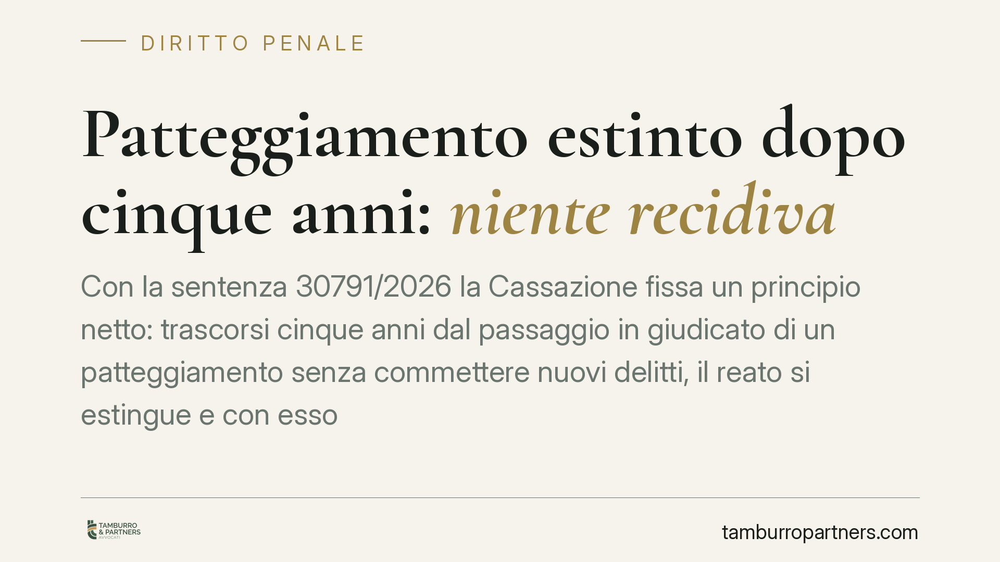

Patteggiamento estinto dopo cinque anni: niente recidiva
Con la sentenza 30791/2026 la Cassazione fissa un principio netto: trascorsi cinque anni dal passaggio in giudicato di un patteggiamento senza commettere nuovi delitti, il reato si estingue e con esso ogni effetto penale. Una condanna così estinta non può più fondare la recidiva. La pronuncia incide su molte posizioni individuali, spesso sottovalutate anche in sede difensiva.

Il caso e il principio affermato
La Corte di Cassazione, con la sentenza n. 30791/2026, è tornata su un tema che genera frequenti errori applicativi: il rapporto tra sentenza di patteggiamento e contestazione della recidiva.
Il patteggiamento — tecnicamente "applicazione della pena su richiesta delle parti" — è disciplinato dall'art. 445 c.p.p. Il comma 2 di questa norma prevede un meccanismo premiale: se entro un certo termine l'imputato non commette un nuovo reato dello stesso indice di gravità, il reato oggetto del patteggiamento si estingue, insieme a ogni effetto penale.
La Cassazione ha ribadito che, una volta maturata questa estinzione, la condanna non può più essere utilizzata per contestare la recidiva, cioè l'aggravamento di pena previsto per chi, già condannato, commette un nuovo reato.
Inquadramento normativo
L'art. 445, comma 2, c.p.p. stabilisce che il reato è estinto quando, nel termine di cinque anni se la sentenza riguarda un delitto (due anni per le contravvenzioni), l'imputato non commette un delitto o una contravvenzione della stessa indole. L'estinzione comporta la cessazione di ogni effetto penale.
Il punto decisivo è proprio quest'ultimo passaggio: la recidiva, disciplinata dall'art. 99 del codice penale, è un "effetto penale" della precedente condanna. Se la condanna si estingue, viene meno il presupposto stesso su cui la recidiva potrebbe poggiare.
La Corte ha quindi corretto una prassi non infrequente, in cui si continuava a valorizzare patteggiamenti ormai estinti per aggravare la posizione dell'imputato in procedimenti successivi. Un'impostazione che la sentenza considera incompatibile con la lettera e la ratio dell'art. 445 c.p.p.
Implicazioni pratiche
Per chi ha definito un procedimento con patteggiamento, la pronuncia ha ricadute concrete.
Prima conseguenza: un patteggiamento estinto non può pesare sulla determinazione della pena in un nuovo giudizio penale. Contestare la recidiva su una base così estinta è un errore che la difesa può e deve rilevare.
Seconda conseguenza: l'estinzione del reato non è automatica nel senso di "visibile a tutti". Serve verificare che il termine sia effettivamente decorso e che non siano intervenuti nuovi delitti della stessa indole, condizione che interrompe il beneficio.
Terza conseguenza: la posizione va monitorata anche in sede di certificazioni e iscrizioni. Un reato estinto incide diversamente sul casellario, e questo può rilevare in ambiti extrapenali (ad esempio concorsi, autorizzazioni, rapporti di lavoro).
Attenzione al profilo temporale: la commissione di un nuovo reato della stessa indole prima dei cinque anni blocca l'estinzione. Non basta quindi il semplice decorso del tempo in astratto; va valutata l'intera storia giudiziaria del soggetto.
Cosa fare in concreto
- Verifica le date: controlla il giorno esatto del passaggio in giudicato del patteggiamento e calcola il quinquennio. È il punto di partenza di ogni valutazione.
- Ricostruisci i reati successivi: accerta se, nel periodo, sono stati commessi delitti o contravvenzioni della stessa indole, perché possono impedire l'estinzione.
- Segnala l'estinzione in giudizio: se in un nuovo procedimento ti viene contestata la recidiva fondata su un patteggiamento estinto, eccepiscilo tempestivamente alla difesa.
- Aggiorna il casellario: consigliamo di richiedere una visura aggiornata e, ove necessario, di attivarsi per la corretta annotazione dell'estinzione.
- Valuta le ricadute extrapenali: prima di certificati per concorsi o autorizzazioni, verifica come l'estinzione influisce sulla tua posizione.
Una nota di metodo
La sentenza 30791/2026 non introduce una regola nuova, ma restituisce rigore a una disciplina già esistente. Il valore pratico sta nell'imporre un controllo puntuale: ogni condanna pregressa va esaminata nel suo stato attuale, non come dato immutabile.
---
*Contributo informativo a cura di Tamburro & Partners - Avv. Giuseppe Tamburro. Non costituisce parere legale.*
Ogni condominio ha una storia a sé.
Se gestisci un'amministrazione e vuoi un confronto su una specifica questione condominiale, scrivi allo studio. Ti rispondiamo entro un giorno lavorativo.